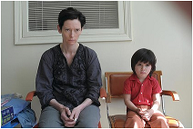

Monster or made? Inside the psyche of a shooter
Patricia Edgar
November 27, 2011

Eva (Tilda Swinton) and son Kevin (Rocky Duer) in a scene from We Need To Talk About Kevin. Photo: Nicole Rivelli
What makes a young killer tick and what can we do to prevent such violence, asks Patricia Edgar.
ON MAY 1, 1992, an event took place in the US that would rock the country and grab headlines around the world. A former high school student gunned down four people and wounded nine others. There had been mass killings before but this massacre, which was carried out by a former student at his alma mater against fellow students and teachers, was to set off a spate of school shootings.
Over the next decade, there were 24 shooting rampages in schools across 15 states carried out by youths aged from 13 to 18. Most of these shooters were not alienated misfits; they were from stable homes. So what makes a young person turn to such extreme violence? What changed in the '90s? This is the subject of the recently released film We Need to Talk about Kevin, based on Lionel Shriver's 2003 book of the same name. Fascinating though they are, the novel and the film add little to our understanding of why young people kill.
Shriver chose to tell the story from the mother's perspective so her novel becomes an examination of the mother's guilt. The book raises frightening questions about nature versus nurture. Either way, the mother ends up feeling responsible for giving birth to a monster.
At the end of the novel and the film, Kevin's tormented mother asks her son, when she is visiting him on his 18th birthday two years after his incarceration: ''Please, look me in the eye. You killed 11 people .. Look me in the eye and tell me why.'' Kevin responds glumly: ''I used to think I knew, now I am not so sure.''
In his book Why Kids Kill, Peter Langman, the clinical director of KidsPeace, an organisation that helps adolescents in crisis, synthesises the voluminous documentation available on 10 shooters to try to find ways to identify potential young killers before they act.
Langman found these were not ordinary kids who were bullied into retaliation, played too many video games or simply wanted to be famous. The media image of shooters as alienated students who had no involvement with their schools was wrong.
However, a clear connection could be made with depression. Of the 10 shooters in the book, nine suffered from depression and suicidal thoughts. Langman says that despite the shooters' apparent normalcy, they were seriously disturbed children, but the complex combinations of environmental, family and individual factors varied from one perpetrator to the other. ''Common factors included homicidal rage, suicidal anguish, inadequate identities seeking to establish an image of manliness through violence, envy towards those with higher status, a desire for fame, fragile personalities that were highly reactive to commonplace slights and frustrations, and masochistic tendencies to hold grudges and magnify wrongs suffered,'' he writes.
In all cases, there were failures of empathy. The shooters' worlds shrank into the needs of the self: their friends did not matter; their parents did not matter; their own deaths did not matter. The modern world's obsession with self, with rights, with the pursuit of happiness and success comes into focus at the very point of transition from youth to manhood. Is this why these mass shootings became a phenomenon in the '90s? For this was when a culture of narcissism, celebrity and self-aggrandisement took hold and the idea of responsibility was undermined.
Is this social change a clue to understanding what has shaped these young males who were already depressed and disturbed? Given the complexity of the motivations of each it is daunting to work out what we can do. But individually and as a community, we must try to identify these troubled children and restore balance before they kill others or turn on themselves.
Australia has not had school shootings; perhaps the inaccessibility of guns has helped, but depression is common and suicide is the second main cause of death in Australia among 14 to 19-year-old males after car accidents.
Greater vigilance and care can make a difference. Langman claims there have been many foiled school attacks and potential shooters have been helped when identified early. Students in the US are now more likely to report any concerns. Schools are trying to reduce student conflict and harassment and are taking steps to ensure every student is connected with at least one adult.
Talking openly and regularly with their children and their school can help parents respond promptly. Knowing their children's friends, where they go, what they do, what websites they visit, may help. And we need to convey to young people that the self is not all, that others matter, and empathy is a core skill they need to nurture as they grow up. Langman warns if the school your child attends is concerned about your child, pay attention.
Patricia Edgar is a sociologist who has studied children's perceptions of media violence.
patriciaedgaranddonedgar.com